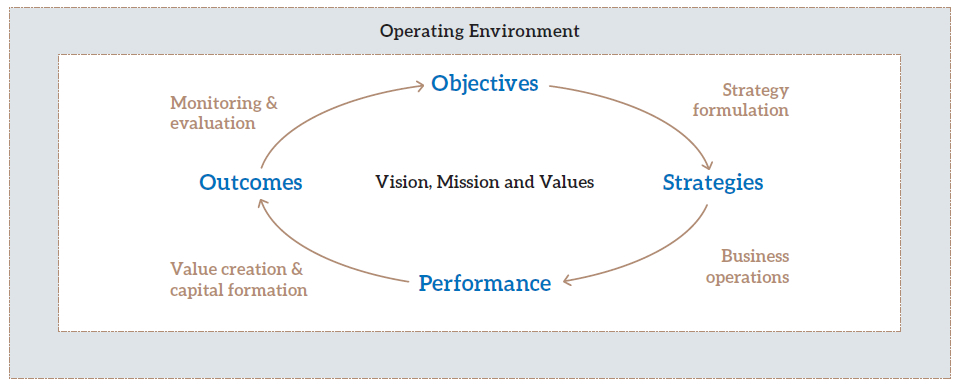

We take a broad view of value creation. It is a two-way process, as the ability of our telecom business (comprising SLT and Mobitel) to create sustainable value for itself is also related to the value it creates for its stakeholders. Thus we distinguish between our business and its stakeholders, identify which ones are important to our business, and understand why our business is important to them. The materiality matrix discussed previously underscores this process.
Value creation leads to capital formation. As a store of value, capital takes on a broader meaning in integrated reporting, and constitutes the resources and relationships used and affected by the business.
We classify capital that is owned by the business as being ‘internal’ capital, while capital that is not owned as ‘external’ capital. Ownership is irrelevant here, as the business has access to and uses all forms of its capital to create sustainable value for itself and its stakeholders.
Our internal capital comprises financial capital and institutional capital. The former is what gets reported in the Financial Statements, while the latter are intangibles such as integrity, trust, specialised knowledge and brand image.
Our external forms of capital thus centre on key stakeholders and comprise investor capital, customer capital, business partner capital, employee capital and social & environmental capital.

The diagram shown above is a dynamic view that integrates the key elements of our business model.
Our corporate vision and mission lie at the core of all what we do. They explain ‘why’ we exist and ‘where’ we want to go. These are brought into focus through strategic objectives which explain ‘what’ we want to achieve in the short, medium and long-term. Translating these objectives into action plans are the strategies, which explain ‘how’ we will do it.
Our strategies are implemented through business operations, with results measured through key performance indicators (KPI). While KPIs focus on time-bound specifics, a more holistic view of our business takes us to value creation and capital formation – which are the outcomes.
Both performance and outcomes are reviewed in the section on Management Discussion and Analysis that follows.
Value creation lies at the core of all what we do. It is a dynamic processes with flows taking place between the various forms of capital all the time. This is managed through monitoring and evaluation systems at several levels leading to oversight mechanisms such as Corporate Governance, Risk Management and environmental scanning (operating environment).
The outcomes in turn lead to a re-evaluation and fine tuning of corporate objectives, and the process goes on.
The Management Discussion and Analysis that follows explains why we consider an aspect to be material, what we do to manage them and how we evaluate our performance and outcomes. The discussion is thus structured along value creation and capital formation, duly supported by key performance indicators and measures.